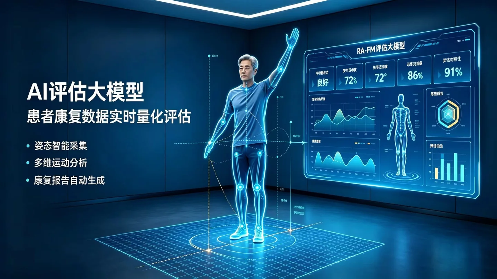
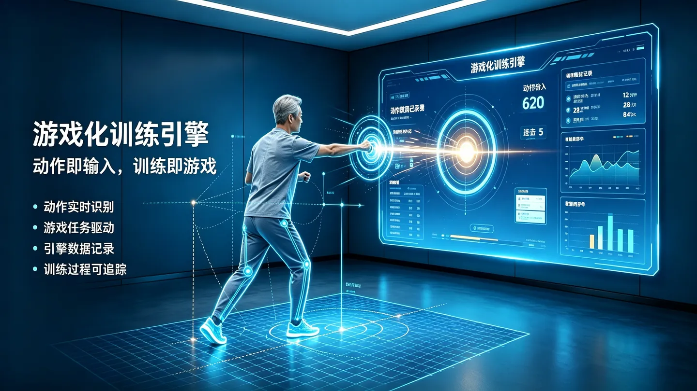
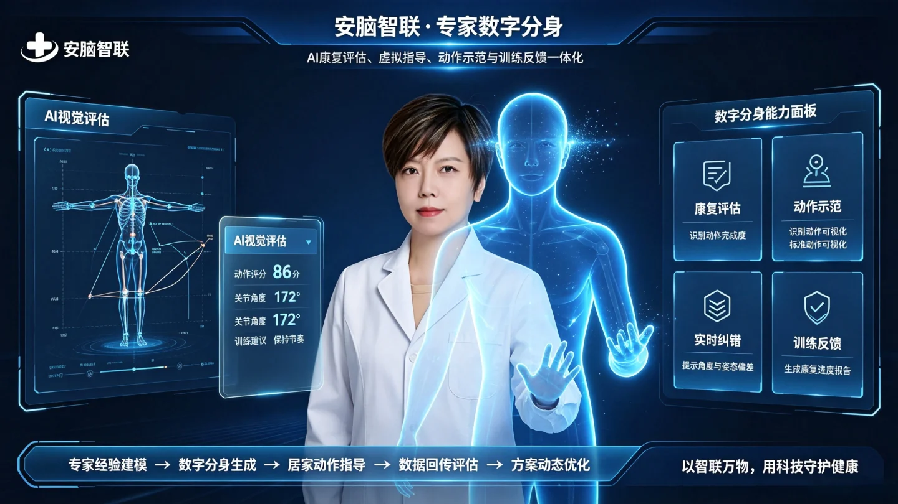
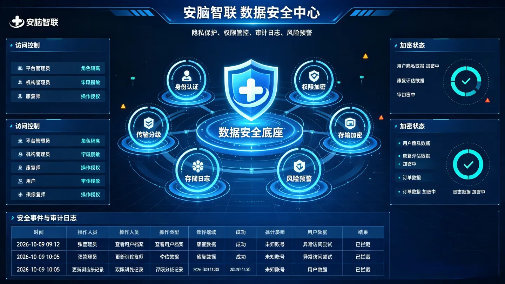

PURPOSE-BUILT TECHNOLOGY
Technology for the whole rehabilitation journey.
An integrated platform built around AI vision, game interactions and professional knowledge.
01 / AI VISUAL ASSESSMENT
RA-FM assessment model
Combine movement captured through a phone camera with pose estimation and scoring models to create traceable training records, supporting professional assessment and collaboration with rehabilitation robots and smart devices.
- Full-body keypoint tracking and motion recognition
- Assessment scenarios for upper limbs, lower limbs and balance
- Coordinated on-device and cloud inference
- Results interpreted alongside professional judgment

02 / MOVEMENT INTO MOTIVATION
Gamified training engine
Map rehabilitation movements to game interactions, with immediate feedback, adaptable difficulty and achievable milestones.
- Movement-to-game interaction mapping
- Immediate feedback and movement cues
- Difficulty adapted to plans and activity
- Progress records and milestone achievements

03 / EXPERTISE, CONNECTED
EDT-LLM expert digital twin
Combine a medical language model, authorized knowledge and retrieval-augmented generation to support everyday questions and reminders, with handoff for issues requiring professional judgment.
- Retrieval grounded in authorized rehabilitation knowledge
- Training information and everyday reminders
- Scope boundaries and professional handoff
- Traceable conversation records

04 / TRUST BY DESIGN
Data security and privacy
Design around minimum necessary data, explicit authorization and role-based access, with protections across transfer, storage, use and traceability.
- Encryption design for transfer and storage
- Patient authorization and role-based access
- Access records and operational audit trails
- Governance across the data lifecycle

Let’s connect the possibilities.
Start a conversation about the right solution for your needs.